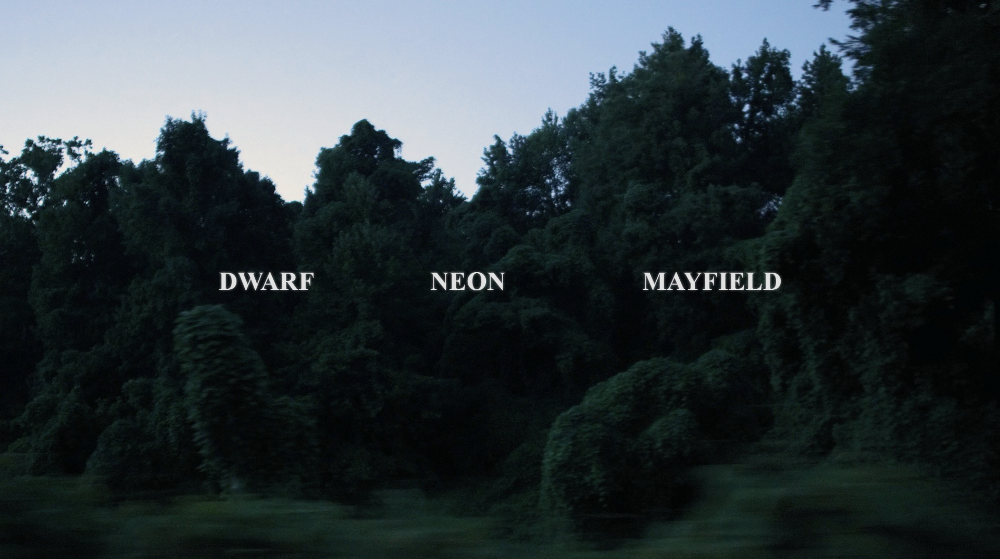
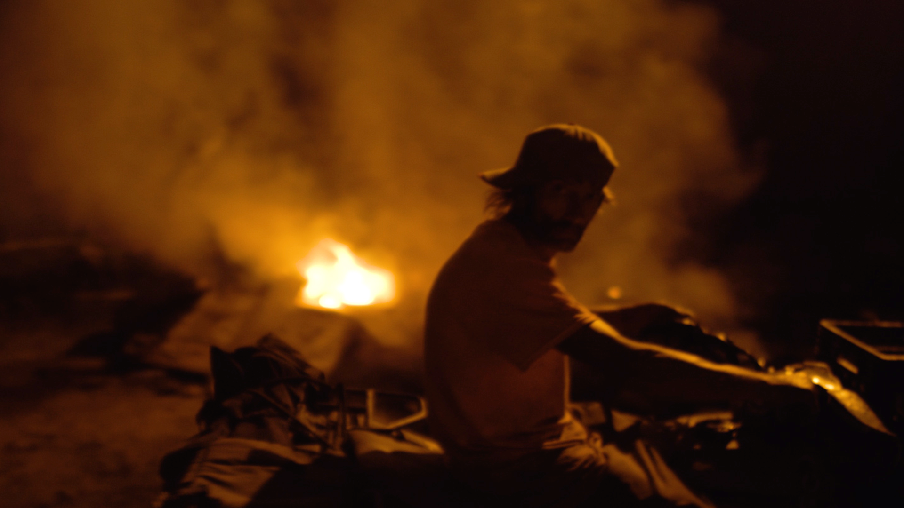
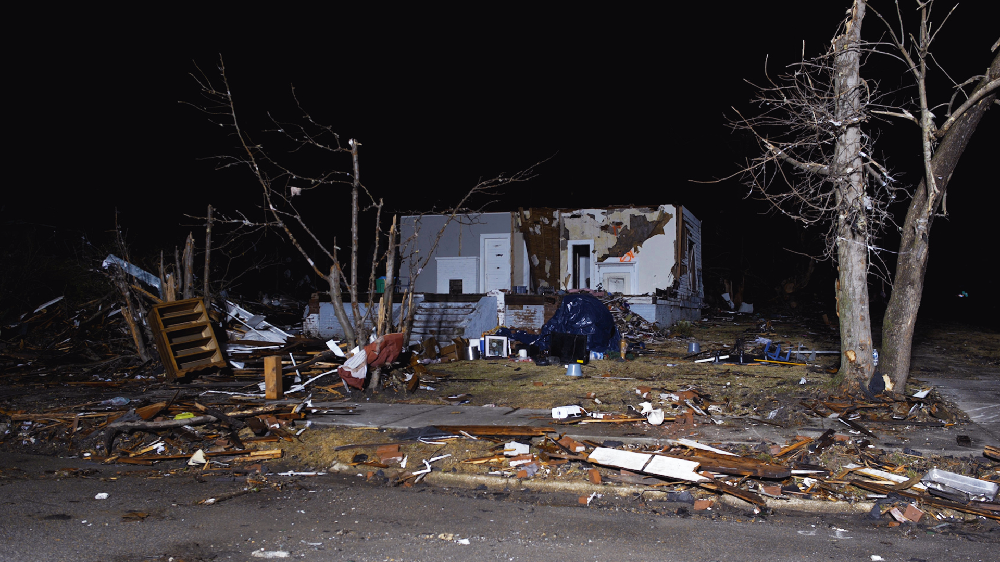
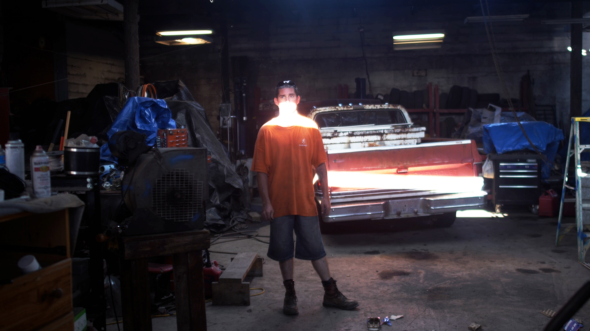
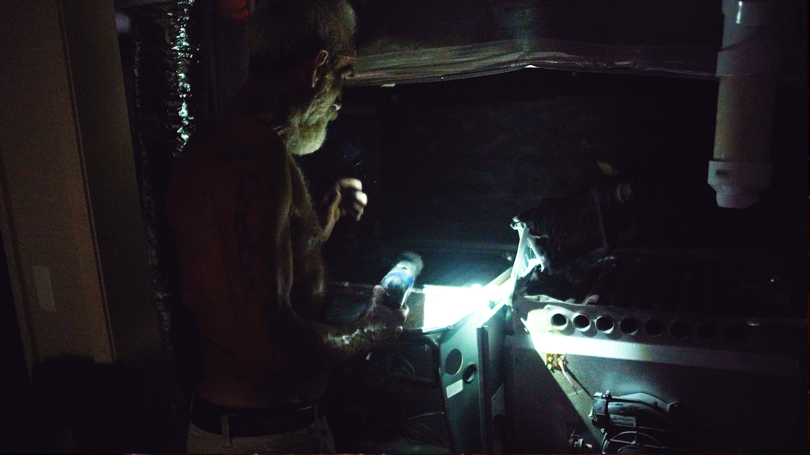
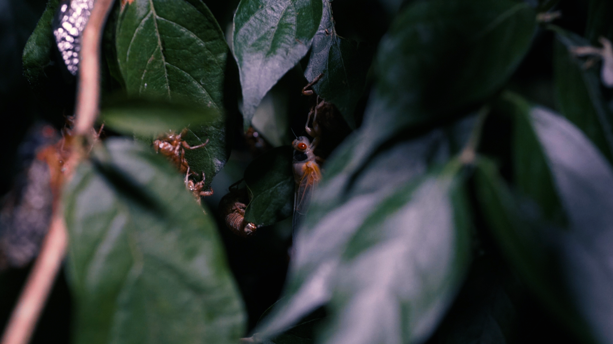

A roving portrait of the phantasmagoric landscape of the rural imagination, Dwarf Neon Mayfield travels the Kentucky countryside following a twin set of storms of historic intensity. In the deepest rural interior, humans and animals alike traverse the new contours of their world while left behind to live amongst the wreckage. A panorama of ecological collapse emerges from America's most impoverished region, elemental images of the living and the dying reveal a psychopheric terrain in upheaval; What of the old world remains?
WINNER Atlanta Film Festival 2026
Mimesis Documentary Festival 2026
Seattle TBA
New York City TBA
More TBA
BEST CINEMATOGRAPHY presented by Panavision
50TH ATLFF
"The word 'bravery' came quickly to mind as we discussed our winning film. To landscapes and lives that have been shocked and disrupted by the force of nature, it brings an eye filled with patience and gentleness. From this delicacy, this camera surfaces images of great tenderness; the care in its handling inspires vulnerability and truth-telling in what it documents."
Winner — Dwarf Neon Mayfield